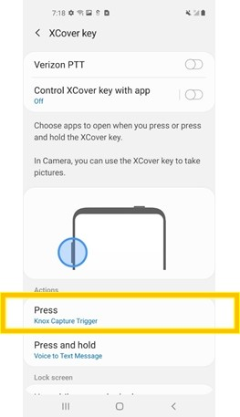
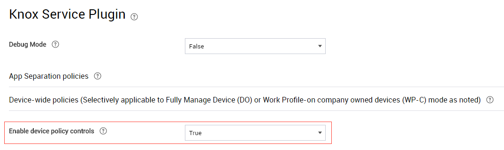
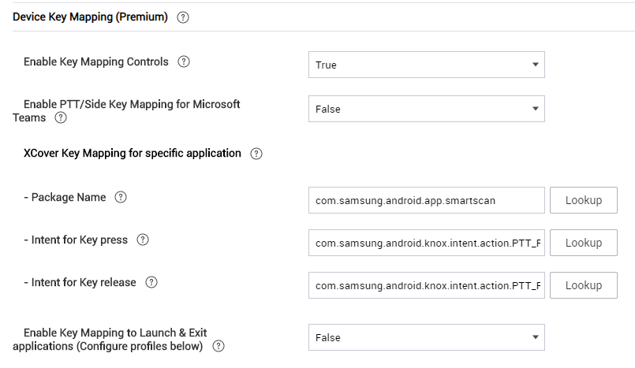

How to trigger camera scan with XCover key on Verizon device
Last updated July 26th, 2023
Note
If your devices are enrolled as company-owned devices with work profiles, ensure that the Knox Service Plugin version in your EMM is 1.2.74 or higher before following the instructions below.
Overview
On Verizon XCover Pro devices, the XCover key is mapped to Verizon PTT (Push to Talk). This mapping prevents the device from triggering a camera scan when the user presses that key.
How do I set the XCover key to trigger a camera scan on a Verizon XCover Pro device?
There are two ways to override the Verizon PTT mapping:
- Disable the Verizon PTT key mapping
- Set the XCover key to trigger a camera scan
Disable the Verizon PTT key mapping on a single device before installing Knox Capture
This procedure describes how to disable the Verizon PTT key mapping on a Verizon XCover Pro device. Perform this procedure before installing Knox Capture on the device.
This procedure is useful if you’re still in the process of testing Knox Capture on a device. If your goal is to configure a group of Verizon XCover Pro devices, see Set the XCover key to trigger a camera scan on a group of Verizon XCover Pro devices instead.
Note
This procedure assumes that you haven’t installed Knox Capture on the device.
-
On the device, tap Settings > Advanced features > XCover Key and switch off Verizon PTT.
-
Install Knox Capture.
During installation, Knox Capture trigger is automatically assigned to the XCover key’s Press action. You can verify this by going to Settings > Advanced features > XCover Key.

Set the XCover key to trigger a camera scan on a group of Verizon XCover Pro devices
This procedure describes how to use your EMM to disable the Verizon PTT key mapping on Verizon XCover Pro devices and program the XCover key to trigger a camera scan. In this procedure, Knox Manage is used to illustrate the steps, but the steps are similar for other EMMs.
Note
This procedure assumes you’ve set up the Knox Service Plugin app with your EMM and that Knox Capture is installed on the devices.
-
On your EMM console, open the Knox Service Plugin policies.
To do this on the Knox Manage console, add or modify an Android Enterprise profile. Then, in the Samsung Knox policies, click Knox Service Plugin.
For information on how to open the Knox Service Plugin policies on a different EMM, refer to that EMM’s documentation.
-
Under Device-wide policies, set Enable device policy controls to True.

-
Under Device Key Mapping (Premium), configure the mapping:
- Set Enable Key Mapping Controls to True.
- Set Enable PTT/Side Key Mapping for Microsoft Teams to False.
- For Package Name, enter com.samsung.android.app.smartscan.
- For Intent for Key press, enter com.samsung.android.knox.intent.action.PTT_PRESS.
- For Intent for Key release, enter com.samsung.android.knox.intent.action.PTT_RELEASE.
- Set Enable Key Mapping to Launch & Exit applications to False.

-
Save and assign the configured profile to the Verizon XCover Pro devices.
-
Verify that the configuration was applied successfully:
- On one of the devices, launch the KSP app and tap Apply policies.
- Go to Settings > Advanced features and verify that the XCover Key is disabled (grayed out).
Pressing the XCover key now triggers a camera scan.
Back to KBAsIs this page helpful?